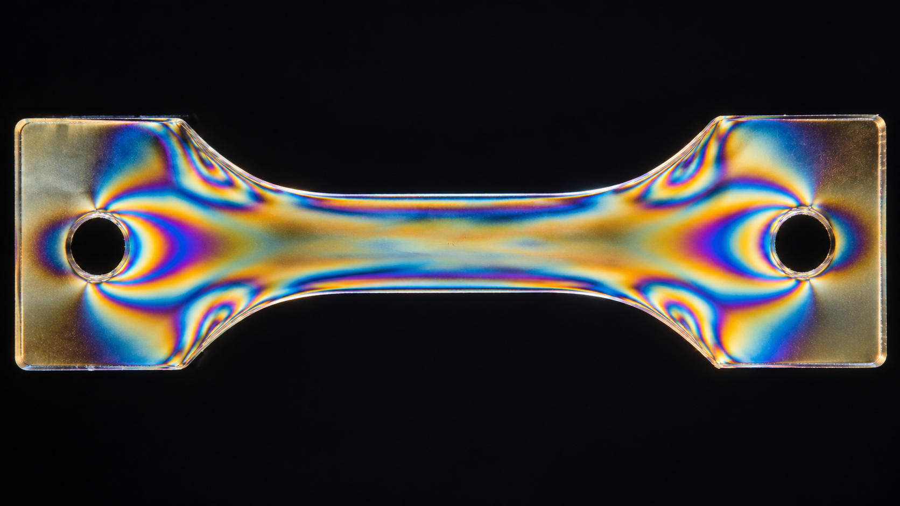
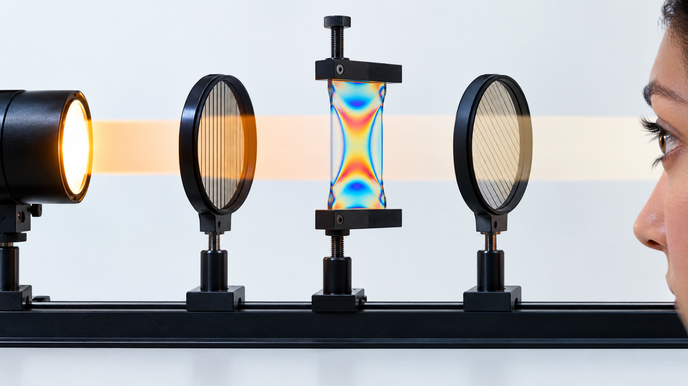

Livello intuitivo: Un pezzo di plastica trasparente sotto sforzo può mostrare frange tra due polarizzatori. Il disegno aiuta a vedere come lo sforzo si distribuisce.
Per essere maggiormente rigorosi: Le frange dipendono da differenza delle tensioni principali, spessore e coefficiente fotoelastico. Per ricavare valori servono calibrazione, unità coerenti e modello appropriato.
L’idea intuitiva
Un oggetto trasparente può sembrare uniforme a occhio nudo ma comportarsi diversamente quando viene sottoposto a una forza. In alcuni materiali, la tensione meccanica modifica gli indici di rifrazione lungo direzioni differenti. Il materiale diventa temporaneamente birifrangente.
Fotoelasticità
In un polariscopio, il campione viene osservato tra polarizzatori. Le due componenti della luce attraversano il materiale con velocità diverse e accumulano un ritardo relativo. L’analizzatore trasforma questo ritardo in variazioni d’intensità o in frange colorate.
In una configurazione semplice, il ritardo ottico è legato alla differenza tra le tensioni principali:
Cosa Vuol Dire?
Livello intuitivo: Il ritardo ottico è coefficiente fotoelastico per spessore per differenza fra le tensioni principali.
A parità di materiale, più spessore o maggiore differenza di tensione producono più ritardo e un diverso ordine di frangia.
Per essere maggiormente rigorosi: Qui è una differenza di cammino ottico in m: con in Pa, C in . La fase in radianti vale .
dove è il coefficiente fotoelastico del materiale, lo spessore e la differenza tra le tensioni principali nel piano.
Le frange indicano zone con uguale ritardo ottico. Una forte concentrazione di frange segnala un cambiamento rapido dello stato di tensione, spesso vicino a fori, intagli o punti di carico. Le frange non forniscono automaticamente il valore della tensione: servono calibrazione, geometria nota e una corretta interpretazione del tipo di frangia.

Applicazioni
La fotoelasticità permette di studiare prototipi e componenti, verificare modelli numerici e mostrare in modo intuitivo la concentrazione delle tensioni. Nei materiali trasparenti può anche evidenziare tensioni residue introdotte dalla produzione.
